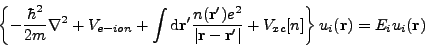
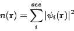
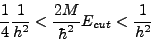
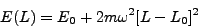
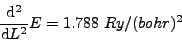
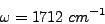

PARSEC was developed to calculate various properties of a collection of atoms in its quantum-mechanical ground state. A central problem is getting a description of electron wave-functions in this ground state. The theoretical framework is density-functional theory (DFT), which provides the electronic ground state after we manage to solve a self-consistent (SCF) eigenvalue problem:

where ui and Ei are respectively wave-function and energy eigenvalue of all the energy levels. Ve-ion is the interaction potential between electrons and ions, essentially a pseudopotential in PARSEC calculations. Vxc is a functional of electron density, calculated for example within the local-density approximation (LDA). The equation above differs from usual eigenvalue problems in that the electron density n(r) depends itself on the wave-functions:

where the sum above is performed over all occupied energy levels. In practice, the eigenvalue problem and the calculation of electron density are solved using some iterative method, which ensures self-consistency between density and wave-functions.
PARSEC solves the SCF problem directly in real space: wave-functions are calculated on a regular grid of points, { rj; j= 1, .., N }. In confined systems such as clusters of atoms and molecules, wave-functions are required to vanish outside a large spherical domain which contains the atoms. In periodic systems, wave-functions are required to be periodic over a user-defined periodic cell. More details about the theoretical framework behind PARSEC can be found in References [1] [2].
This is a simple calculation. These are the input files: Si_POTRE.DAT and H_POTRE.DAT (pseudopotential files), and parsec.in (input parameters). Let us take a look at parsec.in. Most of the parameters there have self-explanatory values. Also, most of them have default values and are therefore omitted (that is why parsec.in is so short!). These are the parameters without default values:
Boundary_Sphere_Radius: 3 ang |
This calculation uses finite boundary conditions (default) such that electrons are confined within a a sphere of radius 3 angstroms centered on the molecule. |
Grid_Spacing: 0.35 ang |
The electron wave-functions are calculated on a uniform grid, with spacing between nearest-neighbors of 0.35 angstroms. The spacing is the same for all Cartesian directions. |
States_Num: 8 |
The lowest 8 eigenvalues/eigenvectors will be calculated. PARSEC uses pseudopotentials, so there are only 8 valence electrons (4 for silicon and 1 for each hydrogen atom) and 4 occupied molecular levels. In order to stabilize the SCF calculation, users should always add a few empty levels, even though only the occupied ones are necessary for calculating the charge density. |
Atom_Types_Num: 2 |
This calculation uses two chemical elements. The last lines in parsec.in specify the chemical elements, local components in the pseudopotentials and coordinates of each atom. This input is set for a Si-H bond length of approximately 1.49 angstroms. |
Some optional parameters are also specified:
Coordinate_Unit: Cartesian_Ang |
Coordinates of atoms are given in angstroms. The default is atomic units (Bohr radius is one). |
Eigensolver: diagla |
The eigensolver used is DIAGLA. Default eigensolver is ARPACK. |
Refer to the User's Guide for a complete list of input options/parameters.
You can simply run the code by entering the name of the executable (you may want to put it in your PATH):
./parsec.ser
Calculation should take around one minute. Once it is done, you will see a number of new files:
parsec.out |
Main output file, with information about energy eigenvalues, forces on atoms, total energy and more. |
out.000 |
Log file, with information about the progress of the eigensolver and other data. Occasionally, error messages are sent to this file. In parallel environment, each process (task, or processing unit) will have its own log file. |
wfn.dat |
Contains the calculated eigenvectors. This is a binary (unformatted) file. |
We can already extract some useful information from this calculation. The first lines of file parsec.out show the list of input parameters (the ones declared in parsec.in and the ones for which default values are used). It also has information about the pseudopotentials and existing symmetry operations in the system. In the sequence, it shows data for all SCF cycles performed before reaching self-consistency. In the last cycle, we see that the first 4 molecular orbitals are fully occupied, and that there is a gap of 9.90 eV between the lowest unoccupied molecular orbital (LUMO) and the highest occupied molecular orbital (HOMO). Forces are printed at the end of the file: the silicon atom feels null force, and each hydrogen atom feels a force of magnitude 0.07 Ry/bohr directed towards the central silicon atom. Overall, the results seem reasonable, but are they converged with respect to the input parameters? This is the subject of next section.
A central aspect of DFT calculations is numerical convergence. In the framework of real-space DFT, there are two numerical parameters which should be always tested for convergence: the grid spacing and the boundary radius. This last one is important only in confined systems; for extended systems, the corresponding parameter is the super-cell size, or the Monkhorst-Pack grid.
We start by testing convergence with respect to the boundary radius. A rule of thumb is to choose this value so that the confining shell is at least several angstroms away from any atom. Directory SiH4_convR contains a series of calculations already prepared for various choices of boundary radius. Users are encouraged to go through at least a couple of them and watch carefully the impact of the various choices on the final results: total energy, forces, energy eigenvalues etc. It may be boring to prepare and execute all those runs. One can write scripts to make the task easier. In fact, there is a script which can submit all those runs: run_convR (the executable must be in your PATH). Notice that the grid spacing used is still 0.35 angstroms.
The following table shows the dependence of various quantities as function of boundary radius.
| Boundary Radius (angstroms) | Total Energy (Ry) | HOMO Eigenvalue (eV) | LUMO Eigenvalue (eV) | Force on H Atom (Ry/bohr) | CPU Time (sec) |
| 3 | -12.31645 | -7.3792 | 2.5140 | 0.0692 | 1.37 |
| 5 | -12.43797 | -8.5136 | 0.0624 | 0.0251 | 8.62 |
| 7 | -12.43825 | -8.5221 | -0.4068 | 0.0250 | 30.40 |
| 9 | -12.43825 | -8.5224 | -0.4831 | 0.0250 | 87.55 |
| 11 | -12.43825 | -8.5227 | -0.4987 | 0.0250 | 199.56 |
A total energy converged to within 1 mRy is obtained with boundary radius 5 angstroms or larger. This is the value we will use for all subsequent SiH4 calculations. Notice that the LUMO energy eigenvalue converges very slowly with respect to the boundary radius. This is a particularity of the silane molecule. It happens because the LUMO is distributed over a volume substantially larger than the volume taken by occupied orbitals.
Users familiar with plane-wave DFT codes know that the energy cutoff essentially defines numerical accuracy. Due to the complementarity between real space and reciprocal space, there is a relationship between the converged energy cut-off (Ecut) and the converged grid spacing (h) for a given calculation:

Often, the value of the converged grid spacing is dictated by the hardest pseudopotential in the calculation. In practice, one should always test the reliability of the value used before proceeding to production runs.
Directory SiH4_convh has a number of subdirectories, each one set for a calculation with a particular grid spacing: from 0.35 angstroms to 0.15 angstroms. Notice that the only parameter modified in files parsec.in is the grid spacing. Again, readers are encouraged to go through at lest a couple of those test runs and get a feeling of how the results change by changing the grid spacing. The following table gives a summary of results for the various quantities as a function of grid spacing.
| Grid Spacing (angstroms) | Total Energy (Ry) | HOMO Eigenvalue (eV) | LUMO Eigenvalue (eV) | Force on H Atom (Ry/bohr) | CPU Time (sec) |
| 0.35 | -12.43797 | -8.5136 | 0.0624 | 0.0251 | 8.70 |
| 0.30 | -12.44925 | -8.5347 | 0.0578 | 0.0147 | 15.67 |
| 0.25 | -12.45271 | -8.5366 | 0.0637 | 0.0115 | 36.60 |
| 0.20 | -12.45474 | -8.5393 | 0.0649 | 0.0092 | 82.65 |
| 0.15 | -12.45462 | -8.5393 | 0.0747 | 0.0079 | 280.50 |
The total energy changes by less than 1 mRy between grid spacings 0.20 angstroms and 0.15 angstroms, which is a rather negligible amount. Therefore, the choice of h = 0.20 angstroms seems safe for converged results.
Now that the necessary convergence tests are finished, we are ready to perform production runs using the silane molecule as example. One of the most common types of calculations is structural relaxation of a molecular system. This is done by directly minimizing the total energy of the system with respect to the position of the atoms. Since we have access to the forces acting on each atom, the structural relaxation can be done easily by moving the atoms along the direction of the forces until we reach a configuration where the forces have negligible magnitude. The technical name for this method is "steepest descent". In parsec, this is labeled simple method. There are several variants of steepest descent, which differ among each other by choices such as how far the atoms move for given forces. In general, steepest descent is a simple but usually inefficient algorithm. More refined algorithms use information about previous configurations in order to optimize the movement of atoms and find the minimum energy configuration with fewer iterations. One such algorithm is BFGS (Broyden-Fletcher-Goldfarb-Shanno, after the authors), which is implemented in PARSEC and it is the recommended algorithm for total energy minimization.
Directory SiH4_relaxation has a prepared calculation for structural relaxation of the isolated silane molecule. In file parsec.in, the reader will notice that the values of grid spacing and boundary radius were chosen according to the previous convergence studies. Also, it has a few additional lines at the end:
Minimization: BFGS |
Enables structural relaxation using the BFGS algorithm. |
Force_Min: 0.01 ry/bohr |
Total energy will be considered minimized once the magnitude of the forces on all atoms fall below this limit. |
Movement_Num: 10 |
Maximum number of relaxation steps, just to prevent infinite loops if the algorithm does not find the minimum. |
This calculation takes several minutes because it will actually perform various sequences of SCF cycles, one for each geometry of the molecule. The minimization algorithm should find the energy minimum after a few iterations. The reader should have three facts in mind though:
Question: Do you have a guess about what happens if the minimum force is chosen exceedingly small (say, 10-4 Ry/bohr or so) ?
After the calculation is done, there will be 3 extra output files:
atom.dat |
with a summary of configurations (atomic positions, forces, total energy); |
bfgs.dat |
with internal data pertinent to the BFGS algorithm; |
relax_restart.dat |
which can be used to restart a relaxation calculation if needed. |
As usual, parsec.out will contain a detailed log of the calculation. From the last configuration, at the end of either parsec.out or atom.dat files, we can read out the equilibrium configuration and the final forces. From this run, we find an equilibrium configuration such that the molecule has the shape of a perfect tetrahedron, with Si-H bond length 1.483 angstroms, in very good agreement with the experimental value of 1.480 angstroms [3].
We can also explore the vicinity of the energy minimum. One of the vibrational modes of this molecule is a breathing mode, where the hydrogen atoms oscillate around equilibrium so that bond angles remain unchanged and the Si-H bonds stretch and shrink in phase. Most likely, this is the path taken during structural relaxation, since a change in bond angles would result in loss of point group symmetry. If we make a plot of total energy versus bond length, we should see a distorted parabola. The curvature of the parabola at its minimum will be related to the frequency of this vibrational mode:

and
The mass of each hydrogen atom is m = 1836 me. Performing a polynomial regression using the relaxation steps in atom.dat, we find:

and

which is 22% smaller than the measured vibrational frequency, of 2187 cm-1. This estimation of vibrational frequency may change if we take anharmonic effects into account and/or perform a polynomial regression with more data points.
One of the advantages of using confined boundary conditions is that we can modify the net electric charge in the system at hand by changing the number of electrons in it directly. As a consequence, we can study charged structures as easily as neutral ones. Here, we are interested in knowing by how much the total energy of the molecule changes when we remove one electron from it. This is the (First) Ionization Potential: the energy required to extract one electron from a molecule.
Directory SiH4_IP has two subdirectories: one for a neutral molecule, and one for a molecule with one less electron (net charge = 1 e). The net charge of the system is specified with option Net_Charges. Notice that the input of both runs specify the equilibrium bond length obtained previously, given in atomic units (coordinate_unit cartesian_bohr). Also, spin polarization is enabled. This means that we are actually using the LSDA (local spin-density approximation) instead of the LDA (local-density approximation). There are two reasons for using the LSDA rather than the LDA:
Running the two calculations as they were set will result in the following values of total energy: Etotal = -12.451 Ry (neutral molecule) and Etotal = -11.554 Ry (cation SiH4). The charged molecule has higher total energy, with an imbalance of 0.897 Ry = 12.20 eV, not too far from the measured first ionization potential of around 12.3 eV (vertical value)[4].
We can also calculate higher ionization potentials by removing two, three or more electrons and observing the change in total energy. This procedure of calculating ionization potentials is known appropriately as DeltaSCF, and it usually has an accuracy of around 1 eV or less.
What about adding electrons? The energy gained by adding one electron to a molecule is its electron affinity. Some molecules, and silane is one of them, are unstable upon the capture of one electron. These molecules do not have a well-defined electron affinity. Sometimes, they are said to have zero electron affinity.
Question: What happens if we try to calculate the electron affinity of silane by calculating the total energy of the anion?
Hint: try to think about what happens to this total energy if we increase the boundary radius and what it means to say that silane is "unstable upon the capture of one electron".
Now, we want to study the behavior of the silane molecule under a static electric field. As you may know from looking at the parsec output of from previous knowledge, the silane molecule does not have permanent dipole moment. But it can show an induced dipole moment under the effect of an external field. The ratio between the magnitude of the induced dipole moment and the external field is the static susceptibility, which we will now calculate.
Directory SiH4_polarized has a prepared calculation for electric polarization. Notice that the last lines of parsec.in have this information:
Polarizability: .true. |
Enables an external, uniform electric field. |
Electric_Field: 0.001 Ry/bohr/e |
An electric field with this magnitude will be applied. |
Notice that this feature is available only for confined systems. There are subtle but important issues when we try to apply static electric fields to a periodic system, which are beyond the scope of this tutorial.
When we run this calculation, we will probably notice that this is taking much longer than most of the previous runs, although the system is the same! There are two reasons for this:
After the calculation is done, we will see a new output file: polar.dat. This file has a summary of energetics during the application of the six different electric fields. The file ends with a report of the static susceptibility tensor (diagonal part only). For silane, this tensor is isotropic, with static susceptibility of 5.0 angstroms3.
PARSEC has been developed primarily for use in confined systems, but it is also able to solve the Kohn-Sham equation in systems with periodic boundary conditions. For this class of systems, the user must define a periodic supercell which, for version 1.1 of the code, must be orthorhombic (meaning: the three unit lattice vectors must be mutually orthogonal). This section of the tutorial shows an example of periodic system: solid hydrogen. We model solid hydrogen as a body-centered cubic (BCC) crystal. BCC hydrogen is known to show a metal-insulator transition. In the limit of extremely low density, hydrogen is insulator with a very high energy gap. As density increases, the energy gap decreases until it vanishes at a critical density. The exact critical density depends on the particular theory employed. DFT in the local spin-density approximation (LSDA) predicts this critical density to be around
Directory bccH_54cell has the input for a calculation of solid hydrogen. We model the crystal as a supercell containing 54 atoms (a 3x3x3 extension of the standard BCC cell). New parameters used in the input are:
Periodic_System: .true. |
Imposes periodic boundary conditions, instead of confined boundary conditions (as default). As expected, the Boundary_Sphere_Radius parameter is not necessary with periodic boundary conditions. |
begin Cell_Shape 1.0 1.0 1.0 end Cell_Shape |
The periodic cell is orthorhombic with all three unit lattice vectors having length 1.0. |
Lattice_vector_Scale: 12.8972759 ang |
The length of all unit lattice vectors is multiplied by the scale specified, resulting in unit lattice vectors with length 12.8972759 angstroms. |
Coordinate_Unit: Lattice_Vectors |
For the sake of simplicity in the construction of the supercell, coordinates of atoms are given in units of lattice vectors. |
Output_All_States: .true. |
File wfn.dat will store all calculated Kohn-Sham eigenvectors, instead of only the occupied ones (default). |
Spin_Polarization: .true. |
Enables spin-polarization. This calculation will use the LSDA exchange-correlation functional. |
As usual, the user should test the grid spacing for convergence. The working directory has a series of subdirectories with various runs for different choices of grid spacings. After running them, one should obtain the following table:
| Grid Spacing (angstroms) | Total Energy (Ry) | VBM Eigenvalue, spin up (eV) | VBM Eigenvalue, spin down (eV) | CPU Time (sec) |
| 0.50 | -49.72795 | -1.9236 | -2.6469 | 79.50 |
| 0.45 | -51.70797 | -2.3094 | -2.9536 | 146.26 |
| 0.40 | -51.63678 | -2.3077 | -2.9909 | 278.22 |
| 0.35 | -51.56695 | -2.2979 | -2.9909 | 457.27 |
| 0.30 | -51.51275 | -2.2845 | -2.9755 | 893.35 |
| 0.25 | -51.50302 | -2.2849 | -2.9772 | 1974.44 |
As we see, the grid spacing 0.50 angstroms gives a really unconverged total energy. But, since our purpose here is not to get very accurate results but just to learn the code, we can relax the requirements on grid spacing and still get meaningful results.
After the calculation finishes, we see the usual output files. Let us take a look at file parsec.out . Somewhere at the end of the setup, we see the following lines:
Input grid spacing: 0.945 bohr Final grid spacings: 1.016 1.016 1.016 bohr Number of grid points along each direction: 24 24 24
This means that, since the grid spacing is not commensurate with the dimensions of the supercell, it had to be readjusted to a slightly larger value. After readjustment, the grid was set with a total of 24x24x24 points (ratio between cell dimensions and grid spacing = 24).
The rest of the file looks pretty much like most of the other files we have seen before. After self-consistency is achieved, file parsec.out shows the final Kohn-Sham eigenvalues for spin components "up" and "down" separately. Also, the magnetic moment is printed:
Electrons in up, down spins: 35.00 19.00 Net magnetic moment (in Bohr magnetons): 16.00
Here, the net magnetic moment takes into account only the spin contribution. Finally, the forces acting on the various atoms have magnitude less than 5 mRy/bohr.
[1] J. R. Chelikowsky, N. Troullier, and Y. Saad Finite-difference-pseudopotential method: Electronic structure calculations without a basis , Phys. Rev. Lett. 72, 1240 (1994).
[2] J. R. Chelikowsky The pseudopotential-density functional method applied to nanostructures , J. of Phys. D 33, R33 (2000).
[3] NIST Computational Chemistry Comparison and Benchmark DataBase ; silane SiH4 geometric data.
[4] NIST Chemistry Webbook, silane SiH4 gas phase ion energetic data.
[5] J.-L. Li, G.-M. Rignanese, E.K. Chang, X. Blase, and S.G. Louie, GW study of the metal-insulator transition of bcc hydrogen Phys. Rev. B 66 , 035102 (2002).